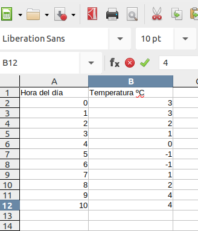

ANÁLISIS DE LOS DATOS RECOGIDOS - CONCLUSIONES
Es hora de aplicar lo aprendido y de analizar los datos que hemos recogido durante nuestro experimento.
En la actividad anterior, sobre el crecimiento de una planta, hemos analizado y descrito la gráfica del crecimiento de una semilla, hemos analizado las dos variables que entraban en juego, determinado el dominio y recorrido y descrito cómo se ha producido el crecimiento (monotonía). También reflexionamos sobre el tipo de gráfica que se nos presentó, donde sólo aparecían las coordenadas de los datos.
En esta actividad vamos a tener que realizar dos tareas:
- Representar las tres gráficas de los datos recogidos de nuestro experimento. (usaremos la hoja de cálculo compartida en la tarea de Classroom).
- Analizar las gráficas y sacar las conclusiones. (completaremos esta tarea en el documento de texto compartido en la tarea de Classroom, apartado 2). Debemos comprobar si se cumplen nuestras hipótesis, ver cuales han sido las condiciones más óptimas de crecimiento, etc.
Para la representación de la gráfica de los datos necesitaremos:
- Anotar los datos en las columnas de la hoja de cálculo (cada columna debe encabezarse con el nombre la variable que se va a anotar)
Ejemplo:

- Seleccionar las columnas y pinchamos el botón de insertar gráfico.
Ejemplo:
- Deberemos investigar todas las opciones que nos ofrece el botón insertar gráfica para representar la gráfica más adecuada, poner el nombre de las variables en los ejes, etc.